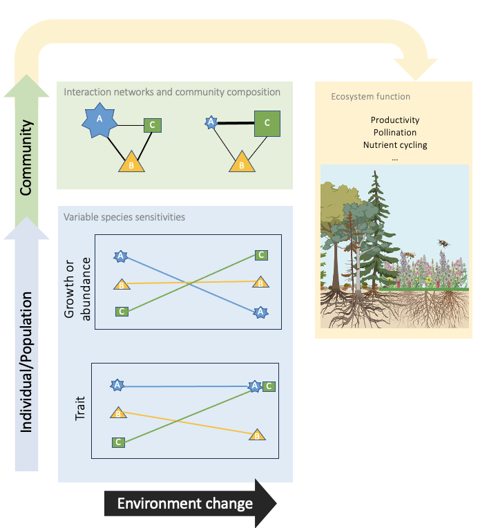
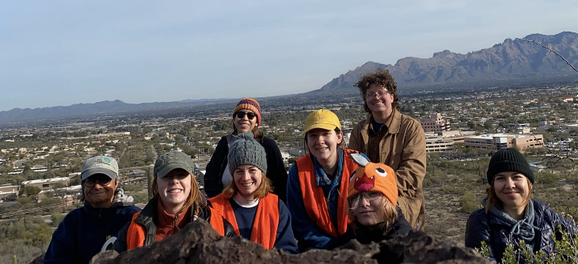
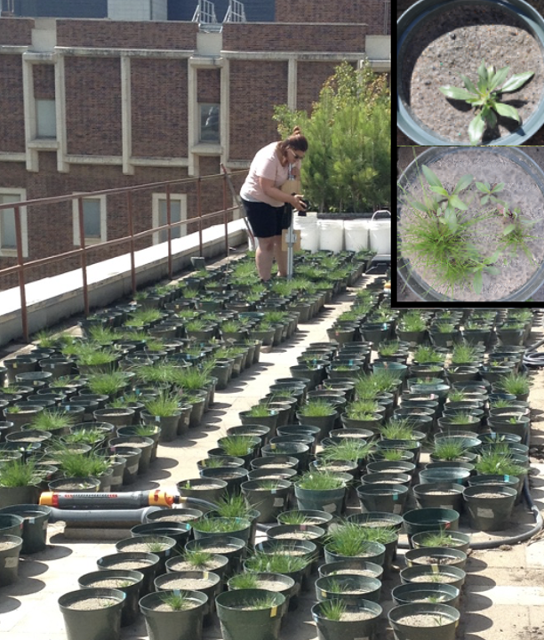

Research
Understanding the patterns and consequences of species-specific responses to global change
With global change, ecological communities increasingly face new and changing environments. Species exhibit marked variation in the magnitude and direction of their response to environmental change through plasticity and genetic change. Understanding these responses, whether beneficial or maladaptive, is crucial for predicting their impact on community and ecosystem dynamics. To understand the patterns and consequences of species-specific responses to environmental change, I evaluate multiple aspects of species response, including growth, demography, morphological traits, and phenology changes. And I use a diverse range of research methods, including theory development, observational studies, field and greenhouse experiments, meta-analyses, and syntheses of global databases in a variety of systems including urban, grassland, desert, and forest environments.
Overall, I am broadly interested in 1) how to assess the predictability of and variability in species responses to global change and 2) how species’ varied responses to global change affect species interactions and community dynamics.

Consequences of climate change for plant species and communities
Anthropogenic climate change has large-scale impacts on plant communities by altering species phenology, distributions, and abundance. The dominant paradigm is to use spatial variation in climatic conditions to forecast ecological responses to future climate change. Yet, this approach can lead to incorrect estimates of the magnitude and direction of ecological response to climate due to local adaptations and non-climatic environmental factors within sites. When not substituting space for time, another method for inferring shifts in phenological events, particularly, is to utilize herbarium specimens. Although this method has advanced the field by allowing us to examine phenological shifts over multiple decades and for many species, it focuses on a singular phenological event, which limits our ability to understand the consequences of phenological shifts for community processes. Thus, a significant restriction in predicting ecological response to future climate change is a lack of long-term data. I work with long-term data sets on plant community composition and species phenology to ask questions such as:
- Are there general trends across species in how they respond to changes in climate?
- Are there trade-offs in species’ demographic responses to climate?
- How do differential sensitivities of species to climate impact species interactions and community dynamics?
By coupling long-term data with an undergraduate research initiative to measure desert plant traits at the University of Arizona, we are asking questions such as:
- What are the key functional strategies used by desert plants?
- Do differential functional strategies impact desert plant species’ sensitivity to climate change?

The role of plant-plant interactions in the maintenance of species diversity
Intense competition is often highlighted as a major force driving species loss; however, plant-plant interactions vary not only in strength but in direction (e.g., competition vs facilitation) and the degree of inequality (e.g., competitive size asymmetry) and transitivity. Further, the consequences of plant-plant interactions can be highly context-dependent, varying with microbial interactions and resource distributions, for example. I use field and laboratory experiments to answer questions such as:
- What aspects of plant-plant interactions are most associated with species loss and gain?
- How does environmental variability, in time and space, alter the consequences of plant-plant interactions?
- Under which conditions are the outcomes of plant-plant interactions predictable?
- How will future global change alter plant-plant interactions?
